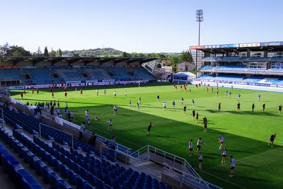
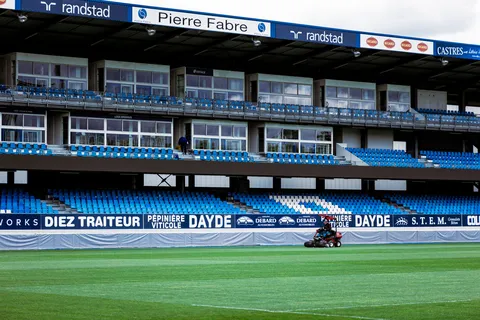

Match
Les actions et l’ambiance de votre rencontre.
Tarifs · Sport
Match, tournoi ou vie du club : une prestation adaptée à votre projet, sur devis.
Les actions et l’ambiance de votre rencontre.

Une couverture adaptée à votre programme.

Entraînements, préparation et moments d’équipe.
Présence, nombre de photos, délai de livraison et usages définis dans votre devis.
Frais de déplacement à votre charge, précisés dans le devis.